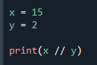
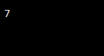
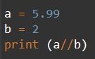
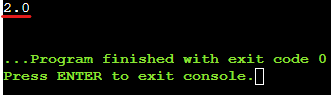

// operator (Floor division)
// operator'u bölerken aşağı yuvarlamaya yarıyor.

bu işlemi // ile yapıldığından sonuç 7.5 değilde,
 7 olarak çıkıyor.
Bir başka örnek;

5.99/2'nin sonucu 3 sayısına çok daha yakın olmasına rağmen aşağı sınırda ki (floor divison) tam sayı olan 2 ‘ye yuvarlayacak.
 burada 5.99 bir float olduğu için sonucun 2 gibi integer değilde 2.0 yani float olarak çıktığını görüyoruz. Bunun nedeni python'da eğer işlemde float kullanılırsa sonuç tam sayı çıksa da çıkmasa da float olarak verilir.